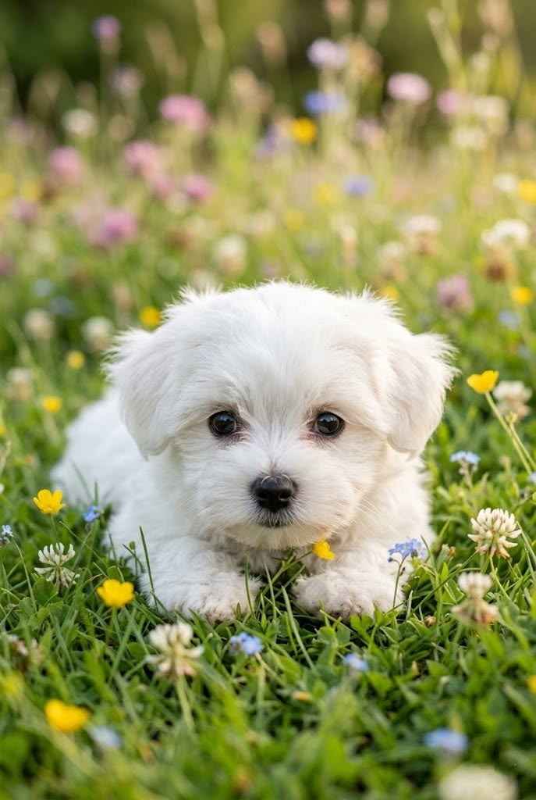
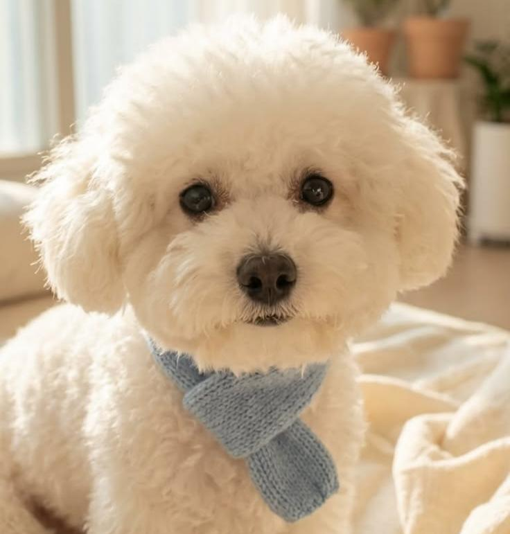

Barboncino
Il Barboncino è una delle razze più iconiche, eleganti e riconoscibili al mondo, celebre per il suo mantello ricciuto soffice e il suo portamento fiero. Dietro l'aspetto sofisticato si nasconde un cane di straordinaria intelligenza, affettuoso e incredibilmente energico.
Disponibile in diverse taglie, è il compagno ideale sia per chi vive in famiglia con bambini, anziani o per chi cerca un fedele amico a quattro zampe da portare comodamente con sé ovunque.
Caratteristiche
Tempo e Routine

Ha bisogno di tempo quotidiano, stimoli mentali e movimento attivo.
Cura e Impegno
Richiede toelettatura costante, spazzolate frequenti e cure periodiche.
Valutazione dello spazio
Perfetto per la vita in appartamento, purché con uscite regolari.
Maggiori informazioni
Tempo e Routine
Cane brillante, curioso e giocherellone, ha bisogno di passeggiate quotidiane e soprattutto di stimoli mentali per canalizzare la sua spiccata intelligenza. Ama imparare comandi, eseguire giochi di abilità e interagire continuamente con la propria famiglia.
Cura e Impegno
Il pelo riccio e morbido ha il grande pregio di non fare la classica muta stagionale (rendendolo ideale per chi soffre di allergie), ma richiede spazzolate quotidiane per prevenire nodi e sedute periodiche di toelettatura professionale.
Valutazione dello spazio
Grazie alle sue dimensioni compatte e alla sua indole educata, si adatta perfettamente alla vita in appartamento in contesto urbano. Apprezza molto anche giardini e spazi aperti dove poter correre liberamente e giocare al riporto.
Pro e Contro
✓ Per chi è ideale
- Razza straordinariamente intelligente e facilissima da addestrare
- Pelo ipoallergenico che praticamente non cade mai in casa
- Carattere vivace, socievole ed eccezionale con bambini e anziani
▲ Cosa tenere a mente
- Richiede toelettatura e spazzolature costanti per curare il manto
- Soffre la solitudine se lasciato isolato per molte ore di fila
- Tende ad abbaiare per avviso o per noia se non riceve stimoli mentali
Momenti ed espressioni



Palette di colori